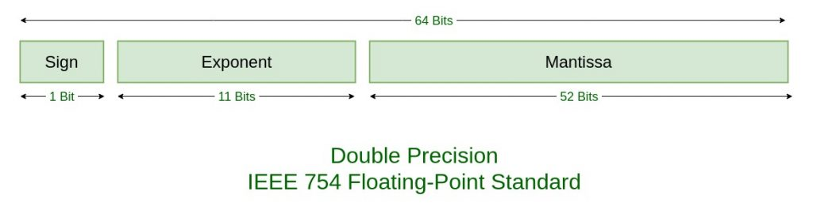

AMATH242/CS371: Introduction to Computational Mathematics
Chapter 1: Floating Point Systems
Numarical algorithms and computers operate on finite percision arithmetic.
We do not have the totality of R. In fact, we only have a "tiny" portion of R.
Definition 1.1: Let x^ be an approximation of a real number x.
Absolute error: Δx=x−x^
Relative error: δx=xx−x^
§1.1 Floating Point System
§1.1.1 Intro
Definition 1.2: A floating point system F⊆R is a subset of the real numbers whose elements have the form z=±(0.x1x2…xm)b×b±(y1y2…ye)b, where b is the base of the system, x1x2…xm is the mantissa, and y1y2…ye is the exponent
which is categorized by:
Base bf
Mantissa mf
Exponent ef
noted as F[b=bf,m=mf,e=ef]
and 0≤xi<b−1, 0≤yi<b−1, and 1≤i≤m and 1≤j≤e.
Example 1.1: F[b=10,m=3,e=2]
z=±(0.x1x2x3)×10±(y1y2)
An example: z=0.127×1019, in which x1=1,x2=2,x3=7,y1=1,y2=9.
Definition 1.3 (Normalization): A floating point number z∈F⊆R(z=±(0.x1x2…xm)b×b±(y1y2…ye)b) is normalized if x1≥1.
Example 1.1 (cont'd): F[b=10,m=3,e=2]
z1=0.127×1019 is normalized.
z2=0.034×10−5 is not normalized, but can be normalized to 0.340×10−6.
Example 1.2: F[b=2,m=2,e=2]
Let's consider all normalized positive numbers in F.
z=(0.x1x2)2×2±(y1y2)2
z1=(0.11)2×2(11)2=0.75×23=6
z2=(0.10)2×2(11)2=0.5×23=4
z3=(0.11)2×2(10)2=0.75×22=3
z4=(0.10)2×2(10)2=0.5×22=2
z5=(0.11)2×2(01)2=0.75×21=1.5
z6=(0.10)2×2(01)2=0.5×21=1
z7=(0.11)2×2(00)2=0.75×20=0.75
z8=(0.10)2×2(00)2=0.5×20=0.5
z9=(0.11)2×2(−01)2=0.75×2−1=0.375
z10=(0.10)2×2(−01)2=0.5×2−1=0.25
z11=(0.11)2×2(−10)2=0.75×2−2=0.1875
z12=(0.10)2×2(−10)2=0.5×2−2=0.125
z13=(0.11)2×2(−11)2=0.75×2−3=0.09375
z14=(0.10)2×2(−11)2=0.5×2−3=0.0625
Observations:
Floating point numbers are not eqally spaced. The spacing "jumps" by a factor of 2 at each power of 2.
There is an awkward gap between 0 and the smallest normalized number.
0 is unrepresentable in this system.
Definition 1.4: The distant from 1 to the next larger normalized floating point number is called the machine epsilon, denoted as ϵmach.
We have the following,
1=(0.10…00)b×b(0…01)b
next=(0.10…01)b×b(0…01)b
ϵmach=(0.00…01)b×b(0…01)b=b1−m
Therefore we also found following properties:
number m (# of digits in mantissa) is called precision.
ϵmach is also called machine precision.
ϵmach=b1−m.
IMPORTANT: the formula ϵmach=b1−m is subject to slight change in single and double precision formats.
Definition 1.5: The system F can be extended by including subnormal numbers which are implemented by: ±(0.0x2x3⋯xm)b×b−(b−1,b−1,⋯,b−1)b, where 0≤x2,x3,⋯,xm≤b−1 and (0.0x2x3⋯xm)b=0.
Recall: Closest to zero normalized number: ±(0.10⋯0)b×b−(b−1,b−1,⋯,b−1)b.
Example 1.2 (cont'd): F[b=2,m=2,e=2] ±(0.01)2×2−(11)2=±0.03125 is the only subnormal number in this system.
If we denote the smallest normalized positive number as λ, the subnormal numbers fill the gap between 0 and λ with the same spacing between λ and bλ.
Let's see another exmaple: F[b=2,m=3,e=2]
§1.1.2 Rounding, overflow, and underflow
Definition 1.6: Let G⊆R denote all real numbers that have the form z=±(0.x1x2…xm)b×by,y∈Z, i.e., we life the lower and upper limits for the exponent.
For ∀x∈R, then fl(x) denotes the nearest number to x in G and the operation x↦fl(x) is called rounding.
round away from zero: x3=1.25→fl(x3)=(0.11)2×2(01)2=1.5
round to the one with an even last digit: x3=1.25→fl(x3)=(0.10)2×2(01)2=1
x4=7.7→fl(x4)=8∈F
Definition 1.7: We say fl(x) overflows if ∣fl(x)∣>max{∣z∣:z∈F}, and underflows if 0<∣fl(x)∣<min{∣z∣:z∈F}.
Example 1.2 (cont'd): F[b=2,m=2,e=2] x5=6.1→fl(x5)=6.
Thus, the following statement is false:
"Overflow occurs when x is bigger than the biggest normalized number in F."
Theorem 1.1 (Unit roundoff): Each real number x such that fl(x) is a normalized number in F has a relative error no larger than u=21ϵmach, which is called unit roundoff.
If x∈R such that fl(x) is normalized in F, then ∣δ∣=xx−fl(x)≤u=21ϵmach.
subnormal numbe correspond to bigger relative error.
§1.1.3 Standard floating point systems
Single precision format (32-bit)
Sign bit: s=1 for negative, s=0 for positive.
Exponent:
We have 28=256 exponents, therefore face value [0,255].
We want a range of signed exponents. The convention is face value subtracted by a bias of 127 →[−127,128].
When e={(00000000)2→−127(11111111)2→128 reserved for subnormals and special numbers.
exponent
mantissa (all zero)
mantissa (not all zero)
(00⋯00)2
±0
subnormals
(11⋯11)2
±∞
NaN (Not a number)
When e∈[−126,127], we have normalized numbers.
Mantissa:
Consider this model we have previously: (0.x1x2⋯x23)2
x1≡1, since:
x1≥1 (normalized numbers)
x1≤1 (b−1=2−1=1)
Therefore, convension is: (1.x1x2⋯x23)2.
A general formula for normalized numbers: x0∣x1x2⋯x22x23∣y1y2⋯y8 ⟹(−1)x0×(1.x1x2⋯x23)×2(y1y2⋯y8)2−127
Example 1.3: (Important quantities in single precision format)
IMPORTANT: The formula ϵmach=b1−m, hence b=2 and m=23⟹ϵmach=21−23=2−22=2−23. This is due to that the assumed leading 1 in the mantissa, despite not being stored, is countributing to a significant bit.
If we want to use b1−m, we need to plug in m=24.
If no limit on the exponent, the next largest number would be 2128.
Number lying in between (2128−2104,2128) should still be rounded to 2128−2104 (hence not causing overflow) if it is closer to 2128−2104.
Double precision format (64-bit)

It is MATLAB's default format.
eps = eps('double')≈2.2204×10−16. 10−16 is a magic number , when we have an error of O(10−16), we should be happy.
§1.1.4 Floating point operations
Definition 1.8: Floating point addition ⊕ is defined by: ∀x,y∈R, fl(x⊕y)=fl(fl(x)+fl(y)). Similarly define ⊖,⊗,⊘.
Question: Is floating point addition associative, i.e., x⊕y⊕z=x⊕(y⊕z)?
Try in MATLAB: (1 + eps / 3) + eps / 3 == 1 + (eps / 3 + eps / 3)
Answer: False. (1 + eps / 3) + eps / 3 would return 1, while 1 + (eps / 3 + eps / 3) would return 1 + eps.
This problem is significant, see the following example:
while x <=pi...end
If x is very close to pi, the loop may iterate one more time or one less time than expected, due to the accumulation of errors.
A better way to write the loop is:
whileabs(x -pi)>eps(x)...end
This way, the loop will iterate until x is within the machine epsilon of pi.
§1.1.5 Cancelation Error
The phenomenon that subtracting two good approximations (say x^ and y^) of two nearby numbers (say x and y) may yield a very bad approximation to x−y (x^−y^≈x−y).
Example 1.4: (Subtraction between close numbers)
We use a decimal floating point system F[b=10,m=5,e=3]. x=0.100134826⟹fl(x)=0.10013 y=0.100121111⟹fl(y)=0.10012 δx=xx−fl(x)=0.0048% δy=yy−fl(y)=0.0011% z=x−y=0.000013715 z^=fl(x)−fl(y)=fl(0.10013−0.10012)=0.00001 δz=zz−z^=27%
Example 1.5: (Evaluation of the exponential function)
Exact: z=exp(x)=ex
Approximation: z^=some_algorithm(x)
Algorithm A: Truncation of the Taylor series
z=exp(x)=∑i=0∞i!xi=1+x+2x2+6x3+⋯+n!xn+⋯
z^=∑i=0ni!xi=1+x+2x2+6x3+⋯+n!xn
This is not a good algorithm!
An example (with F[b=10,m=5,e=3]):
Let x=−5.5⟹z=e−5.5≈0.0040868.
Let n=24⟹z^A=∑i=024i!(−5.5)i⟹in F0.0051563.
Relative error: δzA=zz−z^≈−41%.
Algorithm B:
For x>0, z^B=z^A.
For x<0, we use exp(x)=exp(−x)−1. z^B=(∑i=0ni!(−x)i)−1
Test on the same example: x=−5.5⟹z=e−5.5≈0.0040868.
Let n=24⟹z^B=(∑i=024i!5.5i)−1⟹in F0.0040865.
Relative error: δzB=zz−z^≈0.00734%.
§1.2 Conditioning of a math problem
Consider a problem P with input x and output y=fP(x).
No algorithm or floating point system involved yet!
Definition 1.9: (Conditioning of P)
P is well-conditioned with respect to the absolute error if small change in Δx in x result in small change in Δz in z.
P is ill-conditioned with respect to the absolute error if small change in Δx in x result in large change in Δz in z.
Similarly, we can define both with respect to the relative error.
Intermission: (Vector norms)
Let x=(x1,x2,⋯,xn)∈Rn.
2-norm: ∥x∥2=x12+x22+⋯+xn2.
1-norm: ∥x∥1=∣x1∣+∣x2∣+⋯+∣xn∣.
∞-norm: ∥x∥∞=max{∣x1∣,∣x2∣,⋯,∣xn∣}.
p-norm: ∥x∥p=(∑i=1n∣xi∣p)1/p (for p≥1).
Definition 1.10: (Condition number of P)
The absolute condition number of P: κA=∥x∥∥Δz∥.
The relative condition number of P: κR=∥Δx∥/∥x∥∥Δz∥/∥z∥.
Example 1.6: P:z=x+y
Let x^=x−Δx, y^=y−Δy, and z^=x^+y^.
Then Δz=z−z^=(x+y)−(x−Δx+y−Δy)=Δx+Δy.
With 1-norm: κA=∥(Δx,Δy)∥1∣Δz∣=∣Δx∣+∣Δy∣∣Δx+Δy∣≤triangle ineq.1.
With 1-norm: κR=∥(Δx,Δy)∥1/∥(x,y)∥1∣Δz∣/∣z∣=(∣Δx∣+∣Δy∣)/(∣x∣+∣y∣)∣Δx+Δy∣/∣x+y∣=∣Δx∣+∣Δy∣∣Δx+Δy∣⋅∣x+y∣∣x∣+∣y∣≤1⋅∣x+y∣∣x∣+∣y∣.
If x→−y, then κR<∞⟹κR→∞.
Therefore, P is well-conditioned with respect to the absolute error, but ill-conditioned with respect to the relative error.